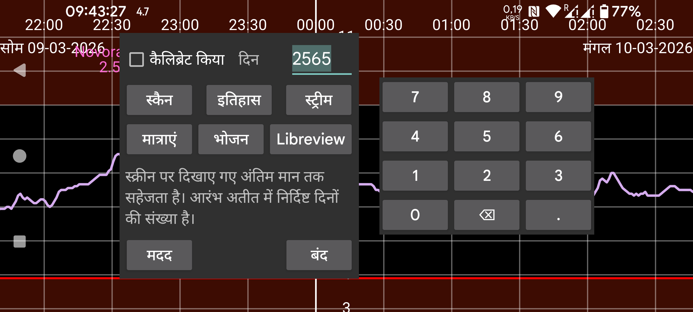

ar be de es hi nl pl ru tr uk uz zh en
Juggluco से डेटा को एक फ़ाइल में एक्सपोर्ट करें।
भोजन html में सहेजा जाता है। अन्य सभी डेटा .tsv (Tab-separated values) में सहेजा जाता है। इसे LibreOffice Calc, Microsoft Excel, Mathematica या R जैसे प्रोग्रामों में लोड किया जा सकता है। यह एक प्रकार का .csv है जिसमें आइटमों को अलग करने के लिए कॉमा के बजाय टैब का उपयोग होता है। UTF-8 एन्कोडिंग का उपयोग किया जाता है।
कॉलमों का अर्थ https://www.juggluco.nl/Juggluco/webserver.html पर पाया जा सकता है।
दिन: Juggluco 7.1.0 से, आप सहेजने के लिए दिनों की संख्या चुन सकते हैं। अंत तारीख स्क्रीन की दाईं सीमा है। इस प्रकार, यदि आप Juggluco में पिछला डेटा देखते हैं, तो केवल पुराना डेटा एक्सपोर्ट किया जाता है (जैसा कि बायां मध्य मेन्यू→आंकड़े में)।
कैलिब्रेटेड: कैलिब्रेटेड मान सहेजें। इस सेटिंग के साथ, स्कैन, स्ट्रीम और इतिहास सभी आइटमों के लिए कैलिब्रेटेड और कच्चे दोनों मान सहेजते हैं। Libreview प्रारूप में, यदि उपलब्ध हो तो केवल कैलिब्रेटेड मान सहेजा जाता है, अन्यथा बिना कैलिब्रेशन वाला (कच्चा) मान।
Juggluco 7.1.0 से, Juggluco में वेब सर्वर (बायां मेन्यू->सेटिंग्स->डेटा आदान-प्रदान->वेब सर्वर) के माध्यम से इस डेटा को प्राप्त करना भी संभव है, देखें https://www.juggluco.nl/Juggluco/webserver.html
Libreview: Libreview प्रारूप में डेटा सहेजें। यह उन प्रोग्रामों और वेब सेवाओं में गैर-Freestyle Libre सेंसर से डेटा आयात करना संभव बनाता है जिनके लिए वह प्रारूप आवश्यक है। Dexcom सेंसर के लिए 5 मिनट के मान सहेजे जाते हैं और Sibionics सेंसर के लिए हर 5 मिनट में एक स्ट्रीम मान। यह Libre 0,2 और 3 सेंसर के इतिहास मानों को भी सहेजता है। यह केवल इंसुलिन खुराक, कार्बोहाइड्रेट और टिप्पणियाँ सहेजेगा, बाद में आपने बायां मेन्यू→सेटिंग्स→डेटा आदान-प्रदान→ Libreview→मात्राएं भेजें के तहत लेबल असाइन कर दिए हों इन श्रेणियों के लिए।